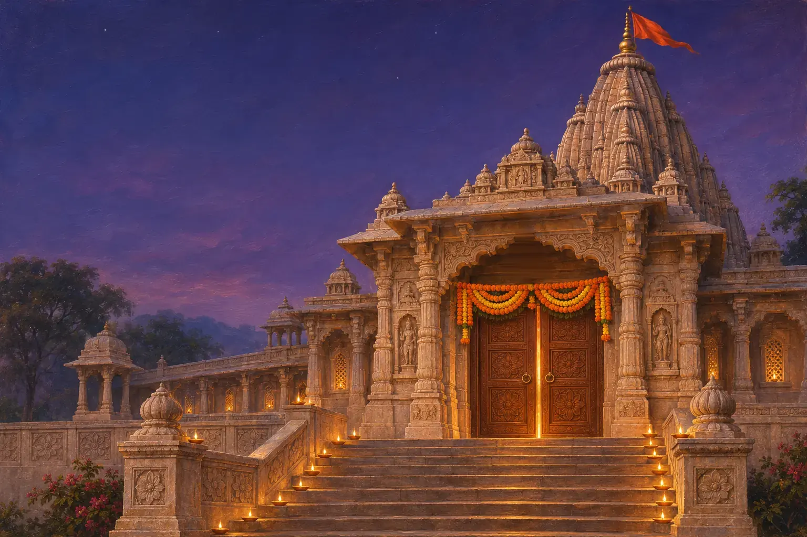

Vedansh Mandirवेदांश मन्दिर
Your daily temple in one app.
Panchang, Gita, Chalisa, japa, vrat and stories for children, in Hindi and English.
Free · No ads · No account needed

Vedansh Mandirवेदांश मन्दिर
Panchang, Gita, Chalisa, japa, vrat and stories for children, in Hindi and English.
Free · No ads · No account needed